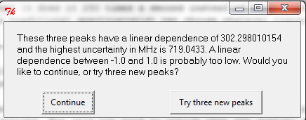

Want to learn to use Autofit like the pros? Here are some tips and things to keep in mind!
In general, these tips make the assumption that the target spectrum you’re trying to assign actually exists in the broadband data. This is perhaps an obvious point, since if there’s no spectrum to find/fit, any set of transitions you pick for Autofit to use will be of poor quality!
By far one of the most important and crucial aspects to a successful Autofit search is a good choice of transitions for the fit triple. Even in the mindset of fitting spectra manually, this is not a stretch to understand. When you try to fit an experimental spectrum in a graphical fitter, say JB95, typically you will pick three good transitions and fit them to a set of 3 experimental lines close to the predicted frequencies. Having 3 parameters (A, B, C) and three fit lines, we get some (hopefully) unique solution where A, B and C are fit with 0 RMS error. Then, you repredict with these new values for the rotational constants and see if additional lines can be added to the fit while dramatically decreasing the standard error on the constants and maintaining a good overall RMS fit error.
This is exactly what Autofit does, except it does it 250 times a second instead of maybe once or twice every couple of minutes (assuming a typical rotational spectroscopist using JB95 or equivalent). But Autofit has a fundamental limitation in that it can only check a single set of predicted transitions per run (whereas the traditional spectroscopist can choose whatever transitions he pleases each time he tries to fit the spectrum), so it’s extremely important that the choice you make is a good choice.
There are primarily two factors to be concerned about when you choose a set of three fit transitions:
- Intensity: Are the transitions you chose guaranteed to be resolvable in your spectrum?
- Linear dependence: Will the transitions you chose generate a set of rotational constants with low standard errors?
It is also important to consider the viability additional transitions (we’ll call them “check” transitions from now on) you add for Autofit to check for each triple it fits. Since Autofit will fit three experimental lines to A, B and C with zero RMS error, the quality of the fits in the final Autofit output are dependent completely on good forward predictions (and good intensities) of the check transitions. But it’s not hard to notice that the quality of the check transitions is coupled to the quality of the fit triple.
For example, if you’re fitting a spectrum that is dependent on all three constants (e.g. a B-type spectrum), picking a fit triple that has good dependence on B & C but not A will make the check transitions, which will likely be dependent on A in some quantity, very difficult to get good forward predictions for. This is due to the fact that the standard error on the A constant in this example is high, so the uncertainty on the location of the check transitions with a dependence on A will also be high. Therefore, in this situation the final fits output by Autofit will be generally poor in quality since the check transitions are either not assigned or assigned to experimental lines with high OMC errors (observed-minus-calculated errors).
Autofit helps you to pick a good fit triple by outputting a number that describes the linear dependence of the fit transitions on A, B and C in a small dialog box that looks like this:
This value is a signed real number, and typically a good fit triple will have a dependence quantity (absolute value) higher than 1. Maximizing this value is optimal, and in fact when you choose to have Autofit select fit triples automatically it will sort them and score them in decreasing linear dependence. However, since the dependence on A, B & C typically increases as you increase in K in a specific J ladder, often the best transitions for A, B & C are the weakest in experimental intensity (especially in a cold molecular beam).
Therefore, it’s important to balance this dependence with intensity. Withlarge systems, where J is typically high relative to “typical molecules”, this isn’t a huge problem. But for small complexes and species it can be difficult to find this balance without sacrificing too much dependence on all three rotational constants.
Here are some helpful tips for picking good fit triples:
- A-type spectra: For the most part, you’re going to have a lot of difficulty finding a set of transitions that are linearly dependent on all three constants. Ka = 0 (we’ll call them K0 transitions from here on out) transitions are proportional to (B+C) and the spacing between the K0s and the Ka = 1 transitions (K1) is proportional to (B-C). However, there is some slight A dependence in the higher Ks, so if you have the intensity for them fitting at least a Ka = 2 transition (K2) will help, or both K2s in order to get A out of the splitting. However, if you don’t care too much about A (e.g. if it’s a pure A-type spectrum), then a good fit triple would be a K0 and K2 of a J, and then a K1 of another J – or some permutation of Ks and Js. It’s best to get some diversity in J, so don’t stick to just fitting a K0, K1 and K2 of a single J.
- B-type spectra: You pretty much get instant dependence on A, B and C no matter what transitions you pick. The spacing between two J’0J’ - J’‘1J’ transitions is roughly proportional to 2B, and the position of the J’1J’ - J’‘0J’ transition is roughly proportional to A and C, so with two K’a = 0 and a K’a = 1 transition you’ve got A, B and C. You can do better with higher K’a transitions, but with most systems you will get a good balance of intensity and constant dependence using the suggestion above. Note that splittings between the b-type K’a = 2 asymmetry doublets also get you dependence on all three constants.
- C-type spectra: Since the 1-0 of a C-type spectrum occurs at (A+B), you get instant dependence on these two with intense C-type transitions such as the J’1,J’-1 - J’‘0J’‘ series. Getting dependence on C, however, can be difficult (like A with A-type spectra), but finding an intense assymetry doublet could ease the process in finding C dependence.
As stated in the previous section, the quality of check transitions is often ultimately dependent on the quality of your fit triple. If your fit set ultimately leads to fits where it’s fitting the check set to noise, then it’s likely a problem with your fit triple. But despite this, there are some things to keep in mind that can improve your experience.
- This is an obvious point, but make sure the check transitions you pick are intense enough to be resolvable! This can be easily checked; if you have a sense of what intensity your fit transitions are likely in the experimental spectrum, then how much weaker can your check transitions be without hitting the lower intensity cutoff?
- In mixed-type spectra, make sure your check transitions have similar dependence to the constants as your fit triple. For instance, if your fit triple contains just some low-Ka: A-type transitions, it’s probably not a great idea to check B-type transitions that have a strong dependence on A. Clearly the opposite is probably a better situation, with fit B-type transitions and checks on the A-types.
- There’s nothing wrong with checking similar transitions as those in the fit triple – quantum number diversity doesn’t matter too much with the check transitions. For example, if you’re fitting the 404 - 303 and the 414 - 313 and maybe a K2 of J = 3, then it doesn’t hurt to check the K0 and K1s of J = 3 and J = 5 either.